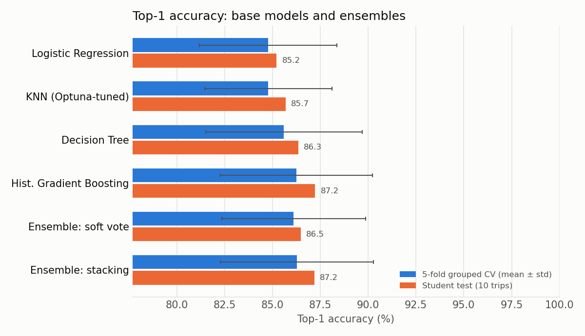
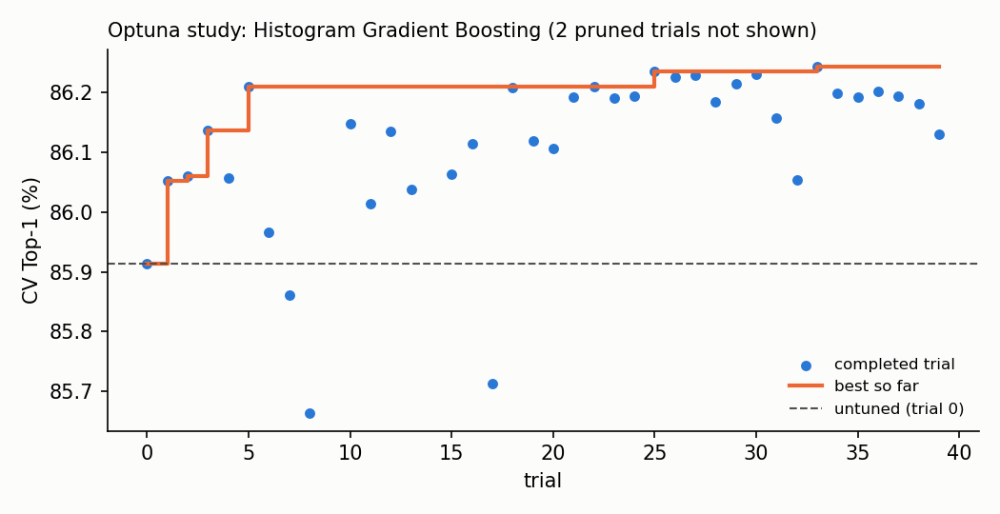
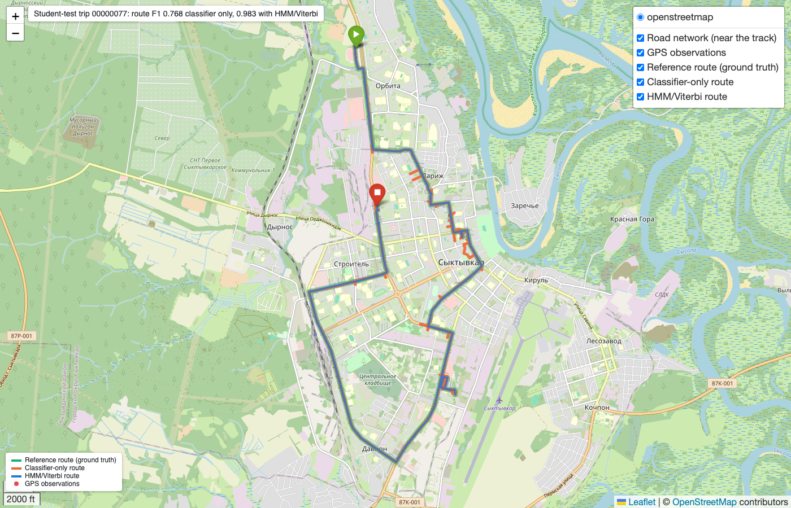
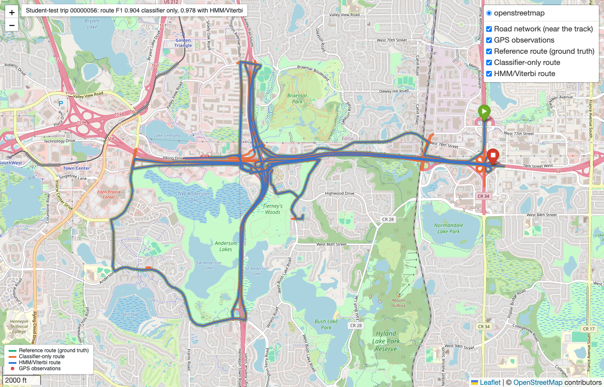
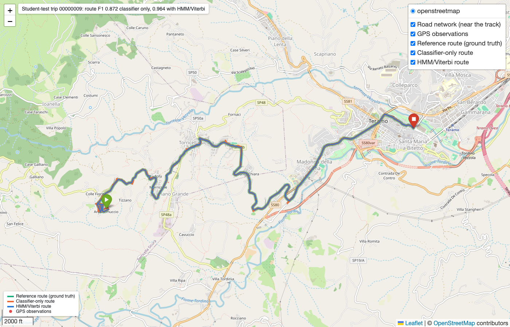

Course: UE24CS352A, PES University. Repository: this repository; every number below is produced by a script under scripts/ and stored under results/.
A vehicle's GPS track is a sequence of noisy points. PathSnap infers which directed road arc of the supplied network the vehicle was on at each point, then reconstructs the connected sequence of arcs it drove. GPS noise, multipath near buildings, sampling gaps and parallel or two-way roads make the nearest road wrong in about 45 % of readings, so the system combines a learned candidate scorer with a hidden Markov model (HMM) decoded by Viterbi.
Each trip folder has four headerless, whitespace-separated files. Node and arc IDs are zero-based row indices and are preserved.
| File | Columns | Use |
|---|---|---|
.track |
longitude, latitude, elapsed seconds | prediction input |
.nodes |
longitude, latitude | prediction input |
.arcs |
from-node, to-node (directed) | prediction input |
.route |
ordered arc IDs | labels and evaluation only |
| Partition | Trips | Use |
|---|---|---|
| Training | 80 | fitting, 5-fold cross-validation grouped by trip, all tuning |
| Student test | 10 | one final comparison per model |
| Evaluator test | 10 | never read during development |
The training partition has 208,417 GPS readings, 1.93 million nodes and 3.88 million arcs, with no missing files, malformed rows or invalid references (docs/DATASET_EXPLORATION_FINDINGS.md). Sampling is normally 1 Hz, but 590 gaps exceed 10 s and the longest is 153,064 s. Road networks have between 1 and 421 weakly connected components and contain parallel directed arcs, so connectivity is checked explicitly and arc identity is kept.
Implementation: src/pathsnap/features/candidate_features.py.
.route file lists arcs in order but does not say which reading belongs to which arc. A monotone dynamic programme aligns readings to route arcs, minimising point-to-arc distance while both indices only move forward. Readings whose aligned arc is more than 50 m away are unlabelled and excluded from training and scoring. These are derived labels, not independently surveyed ground truth.| Group | Features |
|---|---|
| Distance | dist, dist_rank, dist_minus_min, win_dist (mean distance of readings i-3..i+3 to the arc) |
| Heading | cos_heading (vehicle heading vs arc direction), heading_ok (vehicle moved more than 2 m) |
| Motion | speed, dt_prev |
| Arc and network | arc_len, proj_t (position along the arc), n_cand, junction_deg, has_reverse |
| Continuity | cont_prev, cont_next (does the arc touch the nearest arc of the neighbouring readings) |
GroupKFold with trips as groups, so no trip is split between training and validation. Validation scores every 3rd reading with all of its candidates.Four independently configured model families score candidates. All of them read the same 15 features and use the same folds, so their numbers are directly comparable. Full details are in docs/report/ensemble.md, docs/report/knn.md and docs/report/hgb_tuning.md.
| Model | Family | Configuration | Training rows |
|---|---|---|---|
| Logistic Regression | Linear | StandardScaler, balanced class weights | every reading |
| KNN | Instance-based | Optuna-tuned: k = 31, distance weights, feature-group multipliers | every 5th reading |
| Decision Tree | Tree | depth 12, at least 30 rows per leaf | every reading |
| Histogram Gradient Boosting | Boosted trees | Optuna-tuned: 250 iterations, learning rate 0.018, 106 leaves, depth 14 | every reading |
Two ensembles combine them:
| Model | CV Top-1 | Test Top-1 | Test macro F1 | Test log loss | Fit | Test scoring |
|---|---|---|---|---|---|---|
| Logistic Regression | 84.77 ± 3.58 % | 85.21 % | 0.826 | 0.235 | 3 s | 0.06 s |
| KNN (Optuna-tuned) | 84.78 ± 3.32 % | 85.67 % | 0.912 | 0.131 | 0.5 s | 51 s |
| Decision Tree | 85.59 ± 4.09 % | 86.34 % | 0.917 | 0.103 | 24 s | 0.03 s |
| Hist. Gradient Boosting (tuned) | 86.24 ± 3.97 % | 87.21 % | 0.922 | 0.093 | 26 s | 0.7 s |
| Ensemble: soft vote | 86.10 ± 3.77 % | 86.46 % | 0.920 | 0.115 | 54 s | 52 s |
| Ensemble: stacking | 86.27 ± 4.00 % | 87.18 % | 0.922 | 0.092 | 54 s | 52 s |
For reference, always choosing the nearest candidate is right for only 54.5 % of labelled student-test readings (55.6 % on training).

docs/report/knn.md.Optuna's TPE sampler (seed 42) was used for both tuned models. The objective was always measured on 5-fold trip-grouped cross-validation of the training trips. The untuned configuration was enqueued as trial 0, so tuned and untuned results come from the identical protocol. Student-test and evaluator trips were never used during any search.
| Study | Trials | Objective | Untuned → tuned (CV) | Untuned → tuned (student test) | Cost |
|---|---|---|---|---|---|
| KNN | 40 (18 pruned) | macro F1 | 0.901 → 0.905 | Top-1 85.3 → 85.7 % | 10 min |
| Hist. Gradient Boosting | 40 (2 pruned) | Top-1 | 85.91 → 86.24 % | Top-1 87.04 → 87.21 %, log loss 0.097 → 0.093 | 185 min |
| HMM α, β | 25 | Top-1 after decoding | 92.0 → 93.1 % (training, out-of-fold) | see section 7 | 2 min |
Both classifier studies converged with small gains, well inside the fold-to-fold spread. The defaults were already near what these features allow. The more useful effect was better-calibrated probabilities (lower log loss), which the HMM consumes directly.

The full write-up is in docs/report/hmm.md.
| Probabilities from | Top-1, classifier only | Top-1, + HMM | Route F1, classifier only | Route F1, + HMM | Mismatch, classifier only | Mismatch, + HMM |
|---|---|---|---|---|---|---|
| Logistic Regression | 85.21 % | 91.79 % | 0.830 | 0.986 | 0.448 | 0.028 |
| KNN (Optuna-tuned) | 85.67 % | 91.28 % | 0.833 | 0.987 | 0.436 | 0.028 |
| Decision Tree | 86.34 % | 92.03 % | 0.847 | 0.987 | 0.391 | 0.026 |
| Hist. Gradient Boosting (tuned) | 87.21 % | 93.58 % | 0.860 | 0.988 | 0.348 | 0.026 |
| Ensemble: soft vote | 86.46 % | 92.45 % | 0.847 | 0.987 | 0.390 | 0.028 |
| Ensemble: stacking | 87.18 % | 93.64 % | 0.862 | 0.987 | 0.344 | 0.026 |
The HMM adds 6 to 7 Top-1 points for every model and cuts route mismatch by more than 90 %. With stacking it reaches route precision 0.978, recall 0.997 and continuity 0.999. Decoding all 10 student-test trips takes 0.47 s.
The deployed default is stacking-ensemble probabilities decoded by the HMM. The choice rests on these points:
It has the highest cross-validation Top-1 of all models (86.27 %) and the lowest log loss. Both selection criteria were fixed before the student-test run.
On the student test it gives the best reading-level Top-1 after decoding (93.64 %) and joint-best route mismatch (0.026).
scripts/make_maps.py writes an interactive Folium map for every student-test trip to results/maps/<trip>.html. Each map has a layer control for:
The backend serves the same kind of map at /map/{trip_id} without the reference layer.



Laptop 2 (browser) -> Vite dev server :5173 --/api/* proxy--> Laptop 1 FastAPI :8000
|-- models/pathsnap_v1 (bundle)
|-- evaluator trip folders
scripts/run_backend.sh. The FastAPI app loads the versioned bundle from models/pathsnap_v1/ and checks every file against the SHA-256 in manifest.json. It lists the permitted trips under PATHSNAP_EVALUATOR_ROOT..nodes, .arcs and .track..route file there, the server computes route precision, recall, F1, mismatch, continuity and Top-1, and returns only those numbers. Reference arcs never leave the server, and tests check this.frontend/). It lists the trips, sends the chosen trip, model and decoder, and draws the GPS trace and the reconstructed route. It shows the server's evaluation, the model comparison and a link to the Folium map. The Vite proxy forwards /api/* to Laptop 1, so no CORS configuration is needed.docs/BACKEND_API.md.Tests cover validation, geometry, candidates, the HMM decoder and network distances, and the API end to end on a synthetic trip, with no dataset needed. That end-to-end test checks the connected route, the absence of labels in responses, rejection of bad trip IDs, models and decoders, the map endpoint, and refusal of a missing or tampered bundle. All 20 tests pass.
End-to-end check through the real backend and the UI proxy, on student-test trip 77 (3,911 readings):
| Model + HMM | Route arcs | Chain breaks | Top-1 | Route F1 | Mismatch | Continuity | Response time |
|---|---|---|---|---|---|---|---|
| Stacking ensemble | 457 | 0 | 83.8 % | 0.983 | 0.034 | 1.000 | 19.6 s |
| Hist. Gradient Boosting (tuned) | 463 | 0 | 83.8 % | 0.983 | 0.034 | 1.000 | 4.9 s |
These match the offline evaluation in section 7. Response times were measured while another job was using the CPU. Most of the stacking time is KNN scoring.
All commands run from the repository root with the pinned environment (requirements.txt: scikit-learn 1.4.2, NumPy 1.26.4). Set the dataset folder first.
export PATHSNAP_DATA_ROOT="/path/to/Student folder" # contains train/ and student_test/
python scripts/knn/knn_optuna.py 40 && python scripts/knn/train_knn_tuned.py # KNN study (optional, results committed)
python scripts/hgb/hgb_optuna.py 40 # boosting study, about 1 hour of compute
python scripts/ensemble/compare_all_models.py # all models + ensembles, about 25 min
python scripts/ensemble/plot_ensemble.py
python scripts/hmm/run_hmm.py 25 # HMM tuning + evaluation, about 5 min
python scripts/export_model.py # writes models/pathsnap_v1/
python scripts/make_maps.py --screenshots 00000077 00000056 00000009
python scripts/build_report_pdf.py # this report as PDF
python -m pytest -q
Then start the system:
PATHSNAP_EVALUATOR_ROOT="/path/to/evaluator/trips" scripts/run_backend.sh # Laptop 1
cd frontend && npm install && npm run dev # Laptop 2, see frontend/README.md